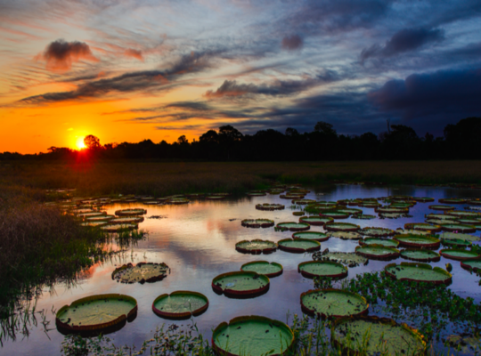
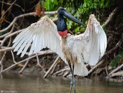
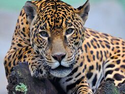
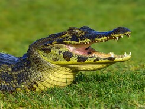
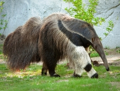
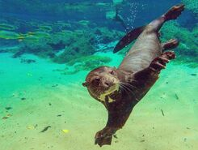
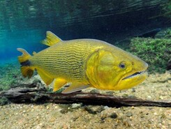
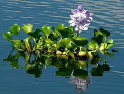
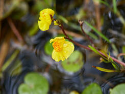

Características

O bioma de Pantanal possui áreas com clima tropical, sendo quente e úmido no verão mas frio e seco no inverno. É o menor bioma brasileiro, ocupando apenas 2% do território nacional e estando localizado em dois estados, em um total de 22 cidades.
Formados por planícies inundáveis, áreas que margeiam cursos de água e podem inundar durante períodos de cheia, essa inundação causa baixa fertilidade de solo já que faz com que a matéria organica se decompanha mais lentamente. Sua vegetação é diversificada pela proximidade a Floresta Amazônica e ao Cerrado, com árvores de médio e grande porte e também árvores tortuosas de baixo porte.
Lista de estados
Mato Grosso e Mato Grosso do Sul.
Fauna
(Exemplos)
Tuiuiú |
Onça-Pintada |
Jacaré-do-Pantanal |
|  |  |
 |
| Apesar de ser encontrada em outros países, mais de 50% de sua população está no Brasil. São famosas por serem a maior ave de planícies inundáveis capazes de voar, tendo 1,6 metros de altura e 3 metros de envergadura. | Terceiro maior felino do mundo e, apesar da semelhança com o leopardo, está mais proxima evolutivamente do leão. Presente em outros países mas extinta em diversos locais, como nos Estados Unidos. | Também chamado de jacaré-piranha devido a sua grande quantidade de dentes. Possuem padrão de coloração variado com um dorso tipicamente escuro, com faixas transversais amarelas. |
Tamanduá-Bandeira |
Ariranha |
Sucuri-Amarela |
|  |  |
 |
| Maior das quatro espécies de tamanduá, medindo até 2,1 metros de comprimento. São famosos pelo seu focinho longo adaptado ao consumo de formigas e cupins. | Também conhecida como onça d'água, isso porque é o maior carnívoro semiaquático da América do Sul. Se alimentam principalmente de peixes. | Serpente que habita áreas alagadas, conhecida pelo seu comprimento e também pela sua coloração vibrante de amarelo com manchas pretas. |
Cervo-do-Pantanal |
Dourado |
 |
 |
| Maior cervídeo sul-americano, podendo alcançar os 127 centímetros de altura e pensando até 125 quilos. São diurnos e solitários, se alimentando principalmente de plantas aquáticas. | Conhecido também como Piraju, muito apreciado pelo seu sabor. Seu nome vem de sua coloração dourada por todo seu corpo. |
Flora
(Características)
Fora a vegetação originária da Floresta Amazônica e do Cerrado mencionada anteriormente, o pantanal é famoso pela sua vegetação "aquática", mais dependente de água e as vezes até mesmo crescendo por cima dela.
Cabomba |
Aguapé |
Utriculária |
 |
 |
 |